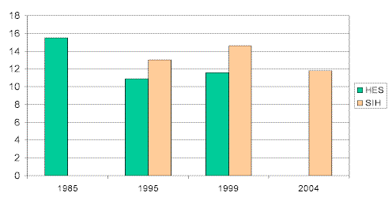
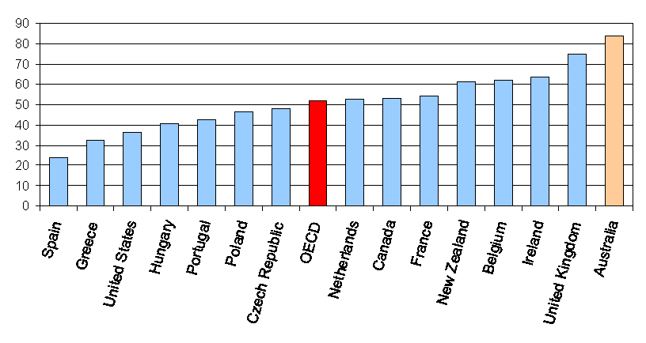
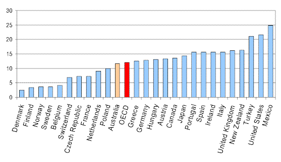
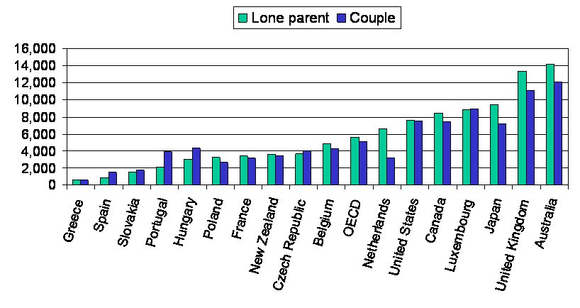
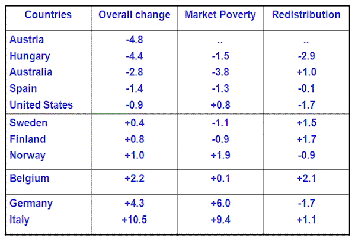
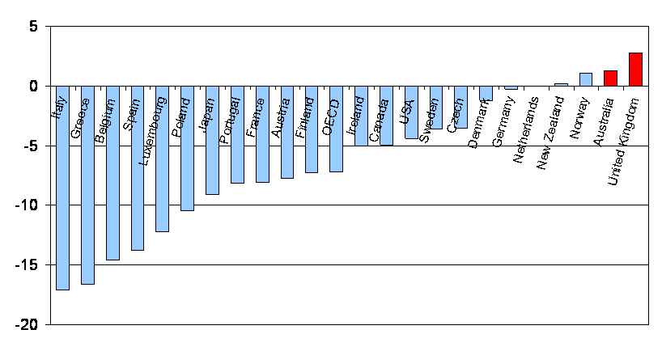

Backroom Girl was nice enough to tell me of a paper being given by one of the world's experts on the tax and welfare systems of the world in Melbourne yesterday. Australian Peter Whiteford was out from his current headquarters at OECD Paris and was giving a talk to the Brotherhood of St Laurence on child poverty and in particular the success or otherwise of tax and transfer systems in helping to alleviate it.
Front rowers in the audience were Peter Hollingworth and Brian Howe both of whom go back a long way on the issue. The paper was very interesting and some of the most interesting points are summarised in graphs below.
When Peter Whiteford put up the slide reproduced below, I pointed to Brian Howe (behind his back) and whispered to the person next to me that he should take a bow.

Look at the reduction in child poverty that followed the policies that Howe championed and which are sadly associated with Bob Hawke's unfortunate improvising from his written policy speech in 1987.* Different methodologies are used for the green and the orange bars, so
if you're comparing across time the correct comparison is between bars of the
same colour.
As most Troppodillians will know, the speech from which Hawke read said "by 1990, no child need live in poverty". It was the best thing done by a government in my lifetime that I can think of. There weren't lots of votes in it. They did it because they believed in it.
And fortunately, contrary to all the hype about Howard being hell bent on taking from the poor and giving to the rich, Howard has kept the pattern of generous family payments - though he's lightened up on the means testing to spread the money around to those most swinging of constituents in the middle of the income stream. There have also been some reductions in inequality lately at least as reported in recent NATSEM material driven it seems by improvements in the part time pay of those near the minimum wage (I guess they're being asked to work longer hours) and tossing $600 to each child as an election comes up. Well the nakedness of the bribe is unprecedented, but I can think of worse electoral bribes (and so has Howard!).

And how's this for a graph to make you proud. Here's the disposable income as a percentage of median income of a lone parent with dependent kids working full time at the minimum wage.
Below the fold are some other charts of interest.
Percentage of children living in poverty.

Note the countries to the left are (mostly) the Nordics. We do quite well given how much less revenue our government takes. The US doesn't look too flash. Still, I guess it's not clear how much it's demographics and how much it's policy.
Net family assistance for single and two parent families working at the minimum wage 
And here's a table on how child poverty has been changing in different countries and what's been driving it.

And now for some bad news. Australia has one of the highest rates of jobless households in the developed world. I think this is a graph illustrating the difference between the actual rate of jobless households and some predicted level of joblessness with the inference being that the change is policy induced. (Peter Whiteford or someone who was at the seminar will probably be along to correct this or clarify it if approrpiate).

Naturally one wonders of the extent to which this is the logical consequence of the subsidies we pay parents and the high effective marginal tax rates (EMTRs) this puts them on when they move into the workforce. Well it's partly that - though our EMTRs are not as high as many countries they must go over a longer range of income than many.
But the other reason is that we've had one of the laxest programmes for trying to 'activate' parents - to send them the signal that they're expected to pay at least some of their way in the labour market when it becomes practicable for them to do so - for instance when their kids get to school. We're now changing that to a substantial extent. In the US those 'signals' of imposing work tests on supporting mothers cut in as early as three months after birth! Subsidies to child care in the Northern European countries also increase parental participation in the labour market.
"And hows this for a graph to make you proud. Heres the disposable income as a percentage of median income of a lone parent with dependent kids working full time at the minimum wage"
Is this really correct?. The median income for a full time worker in Australia is around $45,000 if I correctly, and the minimum wage is around $25,000. Are you saying single lone parents are paying no tax and getting $10,000 or so in subsidies?
Or is it really that the graph is saying, if you work a minimum wage job and are a single parent, you will only pay %20 of your income on tax? Or perhaps, if you take the median wage (including all part-time and unemployed people), then you only pay 20% tax if you get minimum wage.
Hi Conrad.
Don't know how many children (or the ages thereof) assumed in the calculation. There's also the matter of childcare costs, which would often be an issue for a single parent with a full-time job. However, if we assume that two kids aged 13 and 15 (to side-step the childcare aspect somewhat) the amounts are:
Single parent (new system): $38,000 a year (after tax)
Single parent (old system): $42,700 a year (after tax)
The gross earnings are $26,617 a year (the current federal minimum wage). New system refers to the arrangements introduced in July last year. Old system refers to those sole parents still able to get parenting payment because they have been "grandfathered" (what an ugly term).
Hope that helps (and lets you comment further).
Cheers
Spog
I should have added that these are based on current rates - I don't know what was used in the presentation.
Hi spog,
childcare costs are not included in disposable income (they're discretionary). Family Tax benefit-B is at most around $3.5 per child (http://www.centrelink.gov.au/internet/internet.nsf/payments/pay_how_ftbb.htm), which gets us to around 31,000. However, of the 31,000, you still have to pay income tax (around 3,600). That gets me to around 60% of a median wage (which I'll guess is around 45K -- the average is now slightly over 50).
Actually, sorry I'm confused. I should be added both A-and B, which then makes much more sense.
Conrad,
Don't know if this helps you any, but a breakdown of the figures I gave earlier is this:
New system: earnings $26,617; FTB A $11,191; FTB B $2,595; tax -$2,343
Old system: earnings $26,617; parenting payment $5,041; FTB A $11,191; FTB B $2,595; tax -$2,742
Hope that adds up correctly. If not, any errors, of any size at all, I'll blame on rounding.
Thanks Nicholas. I have one small disagreement: there have not been "some reductions of inequality lately. Indeed, the latest ABS data 6523.0 (which I think post-dates the NATSEM study) shows that despite the improvement in family benefits (which had a dramatic dampening effect on inequality in 2003/4), the GINI rose appreciably in 2005/6 and as a result there was an overall increase in the GINI between 1995/6 the last full Labor year and 2005-6. The movement is far from dramatic but nor is it insignificant. The ABS bulletin also indicates a high concentration of wealth (and hence power) in Australia and a tendency for it to rise in the last couple of years.
I agree that Howard has been an untypical conservative, redistributing market income to poorer families. But he has been less generous to the single poor and his policies (on education, health and IR) have been tending to increase market inequality.
Yes, I agree with your comments Fred. My comments on recent reductions in inequality are from the NATSEM paper published earlier this year - and, as the paper says, this finding may be subject to objection owing to definitional changes in series.
Conrad - The graphs (and indeed most analysis that the OECD does) are based on median equivalised disposable household income for the population as a whole. That is, all of the household disposable incomes other than for single person households are divided by an 'equivalising' factor that in this case equals 1 for the first person aged 15 or over plus 0.5 for each other household member aged 15 or over plus 0.3 for each child under the age of 15. This is a pretty rough and ready way of trying to compare incomes across households of widely varying size and composition.
Fred - what the OECD has found is that if you compare welfare payments for families with children and the payments that families with low-paid work get in addition to their earnings, Australia is about the only country where, in theory at least, no family with children should be in poverty if they are getting the social security payments that they are entitled to. Well, perhaps there might be a few families who don't get those payments (eg very recent migrants or families that are suffering some reduction in their income support because of 'breaching'), but these groups would be very small. So the conundrum is really that our income data as collected by the ABS still show fairly significant numbers of children living in poor households.
But I have a strong suspicion that it is the data at fault, more than the income support payments. It has been well known for quite some time that ABS income surveys significantly undercount income received from government transfers. In particular, the number of people that ABS estimates are getting either unemployment benefits or single parent benefits is a lot lower than the number that we know were receving those payments from administrative data. I suspect that some people don't like to admit that they receive benefits while it may be that some people just don't perceive benefits as 'income' when the ABS asks them what their income is. I also have no doubt that many people don't know exactly how much they receive. So what the ABS data represent is at best an approximation of what some people get in transfers, while for others their transfer incomes are just missing altogether.
By comparison, in the Nordic countries most data on household income come from administrative sources. The incomes of people who are surveyed are taken directly from their tax and social security records, thereby avoiding error arising from faulty respondent recall. It is not surprising that these countries then show up as having very low child poverty, even though their system is overall not as generous as in Australia. I'm pretty confident Fred that Australia is not really the terribly unequal country (relative to others) that many people would have us believe.
The only other thing I would probably disagree with is Nick's headline. While Brian Howe certainly presided over a large increase in family assistance, I think the increases that have had such an impact on 'poverty' have probably happened under this government. In the case of single parents in particular (the main type of household showing as experiencing poverty), they have very substantial real increases in family assistance, combined (until the welfare reforms of July last year) with indexation of their pensions to movements in wages, rather than just to CPI like unemployment benefits.
While the changes to move some single parents with older children onto Newstart Allowance means that their situation is not quite as good financially as it was immediately prior to those changes (and, it must be said, as reflected in this most recent OECD analysis), last time I did the calculations they were still quite a lot better off in real terms than when the Howard government first took office (ie at the end of the last period of Labor government).
Thanks BG, that makes much more sense, all I have to worry about now when I compare countries are things like public housing and child-care :), which relate to your last sentence, which is that I can never really judge these things well (I guess the number one issue is really the employment prospects of lone parents -- I doubt single lone parents earning the minimum wage are exactly representative of single lone parents).
Thanks BG. Interesting hypothesis. It illustrates yet again some of the traps involved in international comparisons.
Just for the record, I have never ever argued that we are a "terribly unequal country relative to others". I have always maintained that we are somewhere in the middle of the pack because of our well targeted social security system (which offsets the high initial level of market inequality). I doubt that even accepting your hypothesis, Australia would rank ahead of the Scandinavians and some Europeans on any reasonable measure of equality.
The main point I raised with Nicholas was about TRENDS in inequality in Australia over the Howard era - not about international comparisons.
Does anyone know whether these kinds of comparisons include child support or equivalents? As I understand it, most sole parents in Australia would get some child support, and I wonder whether under-reporting of this (as per BG's comments) occurs, or if data about receipt is even collected.
The other issue about comparisons is concessions provided by government and private bodies. Pensioners (which includes some sole parents) get a pensioner concession card, the value of is rather variable, but can easily exceed $1,000 a year. The figures I provided for Conrad above don't include this.
I wasn't having a go at you specifically Fred. The real point is, it is practically impossible to know how we stack up against the Scandinavians or any other country for that matter.
What Peter Whiteford said the other day is that if there is a problem of poverty among the children of single parents here, it is because of their relatively poor level of labour force attachment, rather than the generosity of the income support available either in or out of work.
Spog - good question. My guess would be that child support might be in if it was in the dataset in question (which I presume is probably the Survey of Income and Housing), but it is also likely to be something that is unlikely to be consistently included across countries. And I'd be pretty certain that the value of concessions (and probably public housing subsidies) are not included at all.
I agree with Fred that even if our data are more 'dodgy' than those from Scandinavian countries it is unlikely that improving them would completely close the gap between us and them, but it could make it a lot smaller.
One of my frustrations with people who identify as being on the left on this topic is that they simultaneously bemoan the fact that Australia has a higher level of inequality than some other countries at the same time as championing the right of many people (particularly single parents) to choose not to work and to be supported by the state. Peter W was very strong on the message that it is the combination of generous income transfers (which we have), high minimum wages (which we also have) and high levels of labour force participation (which we don't have) that leads to low levels of child poverty. Clearly we have some work to do on that last one - but once we've fixed that we should be in Paradise :-)
That should be "some people who identify as being on the left - I recognise that not all lefties feel this way.
" ... it is the combination of generous income transfers (which we have), high minimum wages (which we also have) and high levels of labour force participation (which we dont have) that leads to low levels of child poverty"
Of course our friends over on the right would say we don't have high levels of labour force participation precisely because of the first two.
DD - I'm sure they're not wrong there. If Peter W is right and we really are the country that is most generous to families with children in terms of both the level of transfers and the availability of unconditional income support, I'd be hard put to argue convincingly that those wouldn't have a depressing effect on labour supply. (Which is why I wouldn't even try to mount that argument.)
It's always amused me that many of the fans of the Scandinavian solution don't seem to know that they expect mothers to return to work and put their kids into child care when they are between 1 and 3 years old.